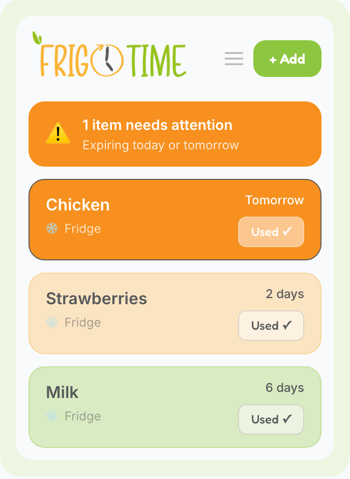

For busy home cooks who can't keep track of everything in their fridge. No manual logging and no guilt. You just get visibility into what needs using first.
Closed beta · now recruiting testers
We really care about not wasting food, and as home cooks who love exploring cultures through cooking, we keep a lot of fresh ingredients in our fridge. Keeping track of use-by dates and constantly checking freshness was exhausting. FrigoTime was born to preserve the joy of cooking with fresh ingredients by using them before they go bad, without the cognitive tax.
If you feel the same, we want to know if FrigoTime can help you waste less and feel that cooking joy when you open your fridge.
Globally, households are responsible for the largest share of food waste. Awareness is generally there. Visibility is the harder part: most people don't know what's in their fridge, when things will go bad, or what to prioritize using first.
Source: UNEP Food Waste Index Report 2024 (2022 data), via Our World in Data. Total food waste across households, food service, and retail came to 132 kg per person per year.
Household food waste is fairly consistent across income levels, differing by only about 7 kg per person. That points to tracking, not affordability, as the behavior to change.
Busy people have limited time and memory. Manually tracking groceries, expiration dates, and what's actually usable requires sustained effort that most households can't maintain alongside work, family, and everything else.
Existing solutions ask users to do the tracking themselves. That works well for people who are already highly organized, and less well for most other households.
There's a mismatch between the problem and the solutions available. People want to waste less, but they don't have bandwidth for manual inventory systems or to learn a new recipe every time they want to use up their leftover produce.
What's missing is something that does the tracking for you, so you can focus on the actual decision: what should we make for dinner?
When you add groceries, FrigoTime tracks freshness windows behind the scenes using shelf-life data from authorities like the USDA FoodKeeper database. The app tells you what needs attention first, without any manual logging.
Does removing the friction of manual tracking actually change behavior? We're measuring whether people stick with FrigoTime long enough to see their food waste drop, and whether cost savings, shown alongside waste reduction, keep them motivated. We ask that you add at least 5 items every week for 4 weeks.
Do testers keep using it past the baseline weeks?
Does measured waste actually go down over time?
Does showing money saved sustain the habit?
The outcome we care about isn't the app itself. It's a measurable shift in how much food households waste over time.
FrigoTime isn't a full kitchen inventory system. We're focused specifically on perishables and fresh ingredients. These are the items that produce methane in landfills and account for much of what households throw away.
We're looking for people who care about reducing food waste and have time to share feedback as we build.